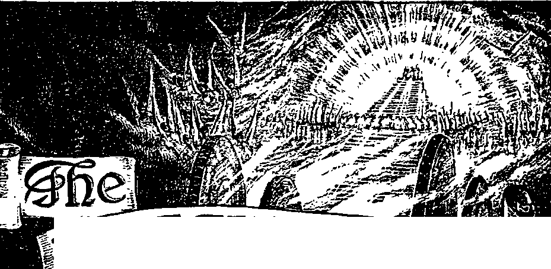
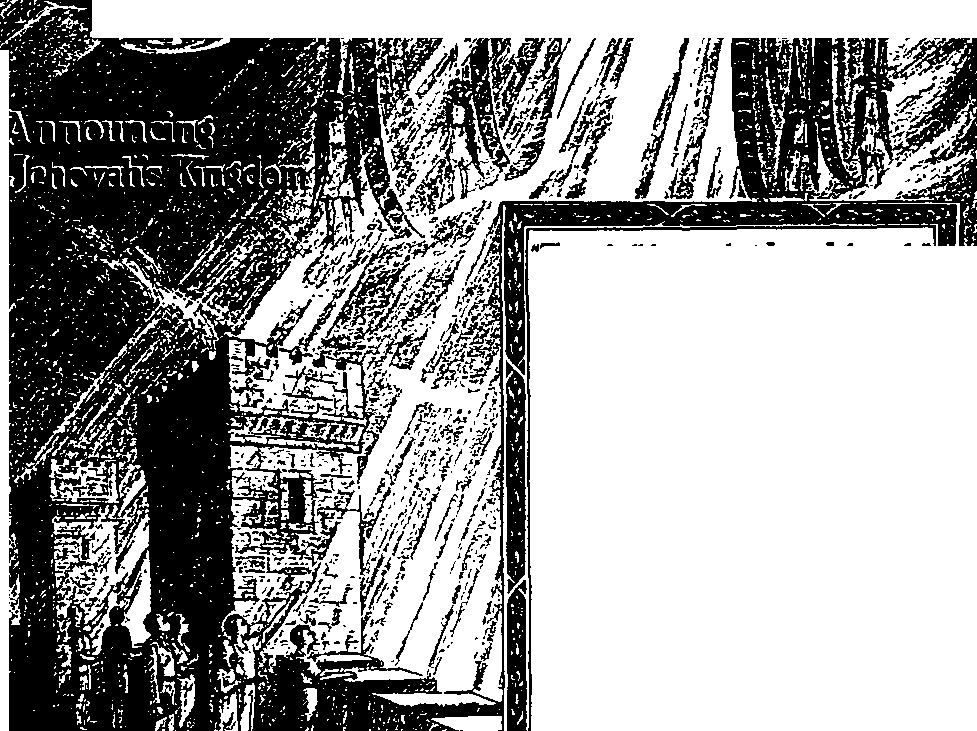

W'
WAJCHTQV/erI
American Standard Version Bible 320
Kingdom Service Song Book ..
320
318
320
306
306
306
306
320
-Ezekiel 35:15.
Vol. LXV Semimonthly No. 20
OCTOBER 15, 1944
CONTENTS
Organized for Final Work .............
The Final Time for Good News.....
The Organization for the Work . Theocratic Structure .......................
Overseers, Superintendents ..........
“Elders” ...................................
Background of Witchcraft..........
Micah and His Household
Priest, Jonathan .....................
Field Experiences.............................
“Prodigal Son” Testimony Period “Watchtower” Studies ..................
“The Kingdom Is at Hand” ...........
“The Kingdom Is at Hand"
Question Booklet.....................
“The Kingdom of God Is Nigh”___
Watchtower Edition of
307
309
310
311
312
313
316
Published Semimonthly By
WATCH TOWER BIBLE & TRACT SOCIETY 117 Adams Street - - Brooklyn 1, N.Y., U-S-A-
Owicebs
N. H. Knorr, President W. E. Van Ambubgh, Secretary “And all thy children shall be taught of Jehovah; and great shall be the peace of thy children.” - Irtteh 54:13.
THE SCRIPTURES CLEARLY TEACH
THAT JEHOVAH is the only true God and is from everlasting to everlasting, the Maker of heaven and earth and the Giver of life to his creatures; that the Logos was the beginning of his creation, and his active agent in the creation of all other things, and is now the Lord Jesus Christ in glory, clothed with all power in heaven and earth, as the Chief Executive Officer of Jehovah;
THAT GOD created the earth for man, created perfect man for the earth and placed him upon it; that man willfully disobeyed God's law and was sentenced to death; that "by reason of Adam's wrong act all men are born sinners and without the right to life;
THAT THE LOGOS was made human as the man Jesus and suffered death in order to produce the ransom or redemptive price for obedient ones of mankind; that God raised up Jesus divine and exalted him to heaven above every other creature and above every creature's name and clothed him with ali power and authority;
THAT GOD'S CAPITAL ORGANIZATION is a Theocracy called Zion, and that Christ Jesus is the Chief Officer thereof and is the rightful King of the world; that the anointed and faithful followers of Christ Jesus are children of Zion, members of Jehovah’s organization, and are his witnesses whose duty and privilege it is to testify to the supremacy of Jehovah, declare his purposes toward mankind as expressed in the Bible, and to bear the fruits of the Kingdom before all who will hear;
THAT THE OLD WORLD ended in A. D. 1914, and the Lord Jesus Christ has been placed by Jehovah upon his throne of authority, has ousted Satan from heaven and is proceeding to the establishment of the “new earth” of the New World;
THAT THE RELIEF and blessings of the peoples of earth can come only by and through Jehovah’s kingdom under Christ, which has now begun; that the Lord’s next great act is the destruction of Satan’s organization and the complete establishment of righteousness in the earth, and that under the Kingdom the people of good-will that survive Armageddon shall carry out the divine mandate to “fill the earth" with a righteous race.
ITS MISSION
HIS journal is published for the purpose of enabling the people to know Jehovah God and his purposes as expressed in the Bible. It publishes Bible instruction specifically designed to aid Jehovah’s witnesses and all people of good-will
It arranges systematic Bible study for its readers and the Society supplies other literature to aid in such studies. It publishes suitable material for radio broadcasting and for other means of public instruction in the Scriptures.
It adheres strictly to the Bible as authority for its utterances. It is entirely free and separate from all religion, parties, sects or other worldly organizations. It is wholly and without reservation for the kingdom of Jehovah God under Christ his beloved King. It is not dogmatic, but invites careful and critical examination of its contents in the light of the Scriptures. It does not indulge in controversy, and its columns axe not open to personalities.
Iukit StTBscsimoM Parcs
UiriTKD Statxx, 31.00; all other countries, tl.SO, American currency; Oiut Bairn*. Aorruuru, akd South Annex, 6s. American remittances should bo made by Postal or Express Money Order or by Bank Draft British, South African and Australasian remittances should be made direct to the respective branch offices. Remittances from countries other than those mentioned may be made to the Brooklyn office, but by Zafentaflonol Postal Money Order only.
Poaaiax Orness
Srttlak 34 Craven Terrace, London, W. 2. Encland
AMtralasias 1 Beresford Road. Strathfield. N. 3. W., Australia
South African .......... Boston House. Cape Town. South Africa
India*16? Lore Lane, Bombay 27. India
Please address the Society In every case.
Translations of this Journal appear in several Unguafea.
ALL SINCERE STUDENTS OF THE BIBLE who by reason of Infirmity, poverty or adversity are unable to pay the subscription price may bare The Watchtower tree upon written application to the publishers, made ones each year, stating toe reason for so requesting IL We are glad to thus aid the needy, but the written application once each year u required by the postal regulations.
Notice to Subscribers? Acknowledgment of a new or a renewal subscription will be sent only when requested Change of address, wbeo requested, may be expected to appear on address label within one month. A renewal blank (carrying notice of expiration) will be sent with the journal one month before the subscription expiree.
Printed in the United States of America gntered os second-class asatter at ths post office at Brooklyn, If. Y., seder the Act of March I, IS it.
“PRODIGAL SON" TESTIMONY PERIOD
The month of October comes in the 1944 Service Calendar under the above title. All familiar with the parable remember that the prophetic story of the prodigal son was given by Jesus in connection with his nation-wide announcement of the Kingdom of God. Most appropriate is it therefore that, during this October Testimony Period, which is world-wide, when the “prodigal son” elass are being aided to return to the heavenly Father, the two new publications to be distributed to this class should be entitled, the book “The Kingdom Is at Hand" and the booklet “The Kingdom of God Is Nigh". The two will be offered in combination by all Kingdom announcers on a contribution of 25c. The circumstances surrounding the Testimony Period are thrilling, and all desiring to have part in this treasure of service will joyfully start at the earliest. Many of our newly interested readers are wanting to share in this Kingdom announcement in company with others, and we invite such to send their inquiries on the work promptly to this office.
“WATCHTOWER" STUDIES
Week of November 19: “Organized for Final Work,” 1-18 inclusive, The Watchtower October 15, 1944.
Week of November 26: “Organized for Final Work," If 19-39 inclusive, The Watchtower October 15, 1944.
“THE KINGDOM 13 AT HAND”
This 384-page book was released by the Society’s president at the recent United Announcers’ Theocratic Assembly and was given a royal reception. “The Kingdom Is at Hand" brings together all the important scriptures and events bearing upon God’s kingdom and weaves them together into an interesting but most enlightening story of truth. The book is bound in a deep shade of red cloth, and the cover design is stamped in gold, conveying the idea of announcing the joyous fact of the Kingdom as at hand. The colored pictures which illustrate the theme are of fine artistic value; and the text matter is supplemented by both a subject index and a scripture text index. As long as the special Publishers’ edition lasts we will mail it to contributors postpaid on a contribution of but 25c. Release of “The Kingdom Is at Hand" in s general edition for public distribution is announced elsewhere
“THE KINGDOM IS AT HAND’ QUESTION BOOKLET
This 64-page booklet serves as an invaluable companion to the new book "The Kingdom Is at Hand". All serious readers of this important book will realize the need of studying it carefully, both privately and in clasa. The Study Questions booklet was specially prepared to meet the need of questions to focus thought and dis cussion upon the gist of each paragraph. In addition to the ques tions covering every paragraph of the book, the Study Question
{Continued on page 320)
Vol. LXV
October 15, 1944
No. 20
"They will indeed turn away from the hearing of the truth, and be turned aside to fables. But be thou sober in all things; suffer bad treatment [as a good soldier of Christ Jesus]; perform an evangelist’s work; fully accomplish thy service."—2Tim.4:4,5, The Emphatic Diaglott.
JEHOVAH GOD is approaching the grand climax I of his "strange work”, which work precedes the J battle of Armageddon. The not distant future, into which the postwar road of mutilated humanity leads, will witness the end of a work that he will never repeat. Its end will also spell the end of man’s global organization which fails to favor the “strange work” of God. Such disaster upon man’s boasted self-rule of the globe will come by the direct action of Almighty God. In ancient time Mount Perazim and the valley of Gibeon were sites of his strange or spectacular doings. Armageddon, to which all the nations are now gathered, will shortly mark his strangest of acts, of which his former acts at Gibeon were mere typical samples. Of this future history he gives us his own promise: “For Jehovah will rise up as in mount Perazim, he will be wroth as in the valley of Gibeon; that he may do his work, his strange work, and bring to pass his act, his strange act. Now therefore be ye not scoffers, lest your bonds [of judgment and doom] be made strong; for a decree of destruction have I heard from the Lord, Jehovah of hosts, upon the whole earth.” (Isa. 28: 21, 22, Am. Stan. Ver.) First his “strange work”; then his “strange act”!
’ Because the “strange act” bespeaks destruction at Armageddon to man’s global or earthly organization, the “strange work” that precedes it is so crucially important to the present generation of men. Except for the faithful doing of that “strange work” no creatures on earth would outlive the “strange act” of the wrath of God against the wickedness and corruptions of this world. Ever since the warning concerning the near approach of the battle of Armageddon began to be given in our lifetime the religious-minded men of this world have scoffed at such a thing as too strange to occur, particularly to “Christendom”. In the same measure that they have viewed
1. Whit will the end of Jehovah’s “strange work” spell 1 and how was thU- foreshadowed and foretold?
2. Why Is the “strange work” so crucially Important? and what ancient warning can be repeated now to those who think It strange? the coining act of Jehovah God as outlandish and foreign to reason, they have looked upon his work preliminary to his act as equally strange. Today it can be said to these scoffers as it was said to like ones long ago: “Beware therefore, lest that come upon you, which is spoken of in the prophets; Behold, ye despisers, and wonder, and perish: for I work a work in your days, a work which ye shall in no wise believe, though a man declare it unto you.”—Acts 13:40,41.
* Those to whom these words of warning were directed were the religious leaders among those who claimed to be God’s chosen nation. Nowadays the self-confident religious leaders of “Christendom” claim to know God’s work when they see it. Yet they view His work now going on as something foreign and alien to God and too strange to accept. For this reason they do not acknowledge it as His work; they condemn and oppose it, and try to set all people within their sphere of influence against it. To these religious clergymen who claim to be the link between God and their religious flocks,' why should His work seem “strange”? Was not the work foretold? and is it not plainly described in the Holy Scriptures where these learned clergymen can read it? Did not Christ Jesus make it unmistakably clear that this work would immediately precede the divine act that brings the calamitous end to this world at Armageddon? Yes; for he prophesied: “And this gospel [evangel] of the kingdom shall be preached in the whole inhabited earth for a testimony unto all the nations; and then shall the end come.”—Matt. 24:14, Am. Stan. Ver., margin.
‘ In the order of events as foretold by Jesus to mark the time of his coming into his kingdom, the preaching of “this gospel of the kingdom” was due to be done after the first world war of human experi-
3. What attitude do the religions leaders take toward the "strange work”! and why la there no excuse tor it to appear strange to them? 4. (a) What is “this goapel al the kingdom’’, and why do the rellglooa element regard It aa strange to preach it? (b) In this connection, what action of theirs marka the religious world aa doomed and near its end?
once. (Matt. 24:7,8) The gospel or good news is of the Kingdom no more as being on the way but as being here and as having begun. This is because in 1914, the year of outbreak of World War I, Jehovah God by his Christ took to himself his great power and began reigning, to make an end of this terrible situation at this earth. The proof of 1914 as marking that important event has been set forth in earlier issues of this magazine and in other Watchtower publications and circulated world-wide. But such proof the religious element declines to believe, and for selfish causes. What wonder that the preaching of the glad tidings of the Kingdom’s coming they should regard as freakishly “strange”! And that men and women should consecrate their lives to Jehovah God through Christ and should then devote themselves to preaching such gospel at risk of world hostility, persecution, sufferings, and death itself, this has struck the religious clergy as “strange”. They themselves are unwilling to risk such things to preach present truths. To add to the afflictions of such gospel preachers, the Catholic and Protestant clergy have joined with the political governments, in fact, have stirred up such political governments, unto misconstruing, condemning, forbidding and suppressing the Kingdom proclamation and unto hating, hounding, arresting, bringing to trial, imprisoning and also killing- the consecrated ones engaged in the proclamation. This was all as Jesus foretold. It marks the religious world as doomed and as near its end.—Matt. 24: 9-13.
5 The work of gospel-preaching continues to go on in spite of all such afflictions, because the faithful ones are determined to endure to the end of the work and to the end of this world. They have nothing to do with religion and refuse to take any part in this world’s affairs and its popular schemes for world recovery, peace and security. Instead, they apply themselves wholly to proclaiming and advocating God’s kingdom as man’s only hope and salvation. These facts add to the strangeness of the work in worldly eyes. When the world situation is so pressing, this “strange work” of testifying to the Kingdom seems to be foolishness in the extreme. This is not the first time that the preaching of the pure message of God has been classed as senseless folly and stupidity by so-called realists and practical men of the world. As long ago as the first century of this era the apostle Paul stated these facts of his own experience, namely: “The preaching of [Christ’s tree] is to them that perish foolishness; but unto us which are saved it is the power of God. For after that in the wisdom of God the world by wisdom knew not God, it pleased God by the foolishness of preaching to save them that believe.”—1 Cor. 1:18, 21.
6 The fact of the Kingdom’s coming in 1914 is all the more reason for us to disdain the world’s cry of “Foolishness!” and to increase the preaching as never before. During World War I the nations used base and un-Christlike tactics to try to silence for ever this preaching; but in vain! The seeming success then of such gospel enemies met with a sharp reverse in 1919, when, by God’s grace, the work was revived among Jehovah’s witnesses. Why so? Because their preaching of the Kingdom gospel is the “strange work” of Jehovah. It is done at His command, in fulfillment of prophecy; and he caused it to be foretold by his Christ. It was therefore bound to be done, and nobody could or has been able to stop it. The only uncertain part was, By whom on earth was the work to be done? The realities which, by the power of God, appear in answer to this question have contributed to the strange nature of the work.
7 Every honest person must admit that the preaching of Jehovah’s Theocratic rule or kingdom by his Christ is not being done by the hundreds of thousands of religious clergymen of “Christendom”. Persons not intimately acquainted with the Bible would expect that such clergy would be the chief ones to preach such a glorious message, pointing all men to the Kingdom as Jehovah’s means for vindicating his name,- destroying all doers of wickedness in heaven and earth, and bringing life and peace eternal to “men of good-will”. The clergy claim to be ordained of God and to be representatives of God’s kingdom. They insist they are the only ones educated enough and officially authorized to interpret the Bible to the people. Look at the world-wide systems- of religion they have built up, rich and mighty organizations for propagating and carrying forward the teachings and practices of their sects and cults. Upon the membership rolls of these denominational organizations they have hundreds of millions of persons written. Due to these very facts the clergy cannot escape their responsibility to be preachers of “this gospel of the kingdom” at the time of the Kingdom’s establishment. But the known conduct of such religionists from and after the decisive date of 1914 testifies against them as to their disgraceful failure to shoulder and discharge their responsibility.
8 Such failure on the part of the religious clergy has not caused the prophecy to fail, that “this gospel of the kingdom shall be preached in all the world for a witness unto all nations”. God simply gets it done by others than the clergy of “Christendom”,
although these, in Haman fashion, think it strange that He does not need or use them in this most important work but gets along without them and in spite of them. In fact, God’s slighting of them infuriates them against those true Christians whom Jehovah God favors with the high privilege of a part in his ‘'strange work”, namely, Jehovah’s witnesses and their companions of good-will.
THE FINAL TIME FOK GOOD NEWS
9 As this calendar year 1944 nears its close, those who are commissioned by Jehovah God and entrusted by him with the service of preaching this Kingdom evangel to all the habitable earth stand on the brink of a grand opportunity. It brings with it a great responsibility; and therefore let them not fail of the opportunity. It is a grave responsibility, but not the less a great privilege, to be living at this stage in the development of God’s “strange work”. The most colossal war of all man’s history leaves in its wake many millions bereaved, homeless, crippled, diseased and undernourished, and poverty-stricken. It leaves such in need of true comfort and guidance. Everywhere are multitudes whose sorrows, bereavements, and disillusionment may turn them to bitterness against God their only Savior by Christ Jesus, unless they are reached with the gospel. Great masses are exposed to the deceits of religion and to the crafty operations of the religionists, who are the principal ones on earth responsible for this global war and who now skillfully seek to cover their tracks and to ingratiate themselves upon the suffering peoples as their best friends.
10 Hence it is no exaggeration to say that never was the need greater for humankind to hear the gospel preached directing all obedient hearers into the way of salvation. The failure of the first League of Nations is now a thing of past history. The framing of a new association of nations with religion as an integral part is under way. It has back of it the most mighty means for enforcing it upon the people. It has back of it the mightiest propaganda agencies, including the religious clergy, for persuading the masses to put their trust in it and support it. Not only is the world’s most ambitious attempt at human government just before us, but also Satan as “the god of this world” is about to deceive all mankind by his greatest scheme for blinding them to God’s kingdom and putting the misinformed ones in direct opposition to it. Satan the Devil knows that the battle of Armageddon is unavoidably ahead of his world. So his purpose is that when it is destroyed by Jehovah’s “strange act”, then as many as possible, if not all, of earth’s population shall be destroyed with it and him. That would leave God’s kingdom to take over few subjects, if any at all, alive into the righteous New World. It is the last time of Satan’s world organization. And since “this gospel of the kingdom” must be preached until the end of that organization, it is evident that the gospel preaching yet to be done, and which sets in with the postwar era, is the final work of witness, the final part of Jehovah’s “strange work”. After it, comes his “strange act” at Armageddon.
11 Through his apostle God gives command to His organization. The pressing circumstances of these times, therefore, add force to it as being due to be obeyed now with the liveliest zeal and earnestness, namely: “I adjure thee before that God and Christ Jesus who is about to judge the living and the dead, and by his appearing and by his kingdom, proclaim the word, be urgent seasonably, unseasonably, confute, rebuke, exhort, with all long-suffering and teaching. For there will be a time when they will not endure wholesome instruction, but will accumulate teachers for themselves, according to their own inordinate desires, tickling their ear, and they will indeed turn away from the hearing of the truth, and be turned aside to fables. But be thou sober in all things; suffer bad treatment; perform an evangelist’s work; fully accomplish thy service.” (2 Tim. 4:1-5, The Emphatic DiaglotV) This admonition of Paul to Timothy was given in order to counteract the turning away of many from hearing the truth. Paul’s very next words show he was expecting shortly to die off the earthly scene of action. Hence the Lord God was using Paul to train and instruct Timothy to act as assistant to the visible governing body under Christ and to serve thus among God’s consecrated people after Paul’s death.
12 Now, at the opening of a new postwar epoch, we are about to be spectators of the greatest mass movement away from hearing the truth and to turning their ears unto fables. The last stand of Satan the Devil and his demons is about to take place, and he now pulls off the biggest fraud in the history of his world organization. It will be the biggest, because it is put over upon the people in the very presence of God’s established kingdom and when the message is going forth in powerful tones, “The kingdom of heaven is at hand.” This message is the truth; but the ears of selfish men itch for something else. In order to further blind and deceive them, Satan must invent and devise the super-scheme, the masterscheme, of all his iniquitous career and fairly hypnotize the people with it. Now practically attaining to the summit of his ambition for totalitarian domination of all this globe, Satan the Devil raises up fear and suspicion and drives the nations to unite in a scheme for a joint holding down of the earth and its people. He starts the fable a-rolling, and uses all possible channels of propaganda and publicity to make it popular, that the after-war association of nations is man's last and only hope for a peaceful earth with security, prosperity and justice to all races, nations, minorities, and languages. A blasphemous fable this is. Against it God's Word sets forth Jehovah’s kingdom by his Son Jesus Christ as the only successful and permanent means for the bringing in of a new world of righteousness, peace, safety, health, prosperity and life forever for faithful men on the earth.
THE ORGANIZATION FOR THE WORK
*’ In the teeth of the world-wide propaganda of Satan and his demons for support of a man-made organization for global rule, the words of our Commander Christ Jesus must be and will be fulfilled: "This gospel of the kingdom shall be preached in all the world for a witness unto all nations.” Your decision must be made now on the question, Who will defy the world and its global organization and obediently advocate for Jehovah’s kingdom by Christ and everywhere preach the good news about it? Do not look to the religious clergy for aid in making your decision on this issue. Already their proposals and declarations show that they have decided for political government of this earth by the same old crowd, namely, imperfect, sinful, selfish men of this world. Never is it to be expected that the religious clergy, big and little, will turn down the scheme of international politicians and reject Caesar as their king or put the Most High God Jehovah above the world state. Not only is consistency with their religious course of action till now against such a thing, but Bible prophecy shows they will religiously hop on the back of the postwar creature and try to ride it with the prod of “more religion”. To deceive themselves and their religious flocks and all the rest of mankind, they will argue that the worldly setup is the “higher powers” and is God’s will toward mankind expressed in a political way, and hence all men must submit to it and support it, lest it fail. All the religious clergy will be good friends of the world state and will give it their blessing and religious advice for its success.—Rev. 17:1-15; 13:14-16; Jas. 4: 4.
“ There is one class of persons on earth whose decision is to “perform an evangelist’s work” on through the postwar epoch and clear through to its f3. What question la now up for decision, and what do the religious clergy's course of action ana the Bible prophecies show their decision to be’
14. Who, however, are decided to “perform an evangelist’s work " and what facts attest that they will do so to the end of the postwar period 1 end, namely, Jehovah’s witnesses. Their record testifies to their having preached the Kingdom evangel without letup from 1918 onward till now. On the fourth day of their United Announcers’ Theocratic Assembly last August in 60 cities throughout the earth (Australian assemblies in September), and with a total attendance of more than 90,000 at the time, they adopted a Resolution having these words as its closing resolve: “That we, as those who are fully consecrated to God to do His will in the footsteps of Christ Jesus, recognize our obligation as ministers of the Kingdom gospel; and that, therefore, down to the final end of Satan’s organization and its postwar creation for dominating humankind, we will keep integrity by continuing to advocate the kingdom of God and never slacking in preaching to all nations that ‘The kingdom is at hand’.” Immediately after the enthusiastic adoption of this Resolution, there was released as an instrument for use in the postwar era the new book "The Kingdom Is at Hand".
11 The Holy Scriptures give good promise that, as certainly as Almighty God and his King Christ Jesus have helped Jehovah’s witnesses to endure Nazi-Fascist-religious persecution and to keep aloft the banner of the Kingdom gospel until this present time, they will continue to sustain them through the postwar years in preaching “this gospel of the kingdom” till the end comes upon Satan’s world organization. What though the vast majority of the common people of all the nations fall for the Devil's cunning deceit and turn away their ears from favorably hearing the truth, Jehovah’s witnesses must persist in preaching without discouragement. They will thus perfect their obedience to God and keep their integrity toward Him. Never will they take up the world’s propaganda and preach its fables. They will not seek to please men with ears itching to hear things that satisfy man’s selfish vanity and self-righteous sentiments. They are committed to obeying God rather than obeying men in conflict with Him, and will ‘stand fast in the freedom wherewith Christ hath made us free'.—Gal. 5:1, Dtaglott.
1‘ According to all indications of Bible prophecy, a tremendous earth-wide work confronts these consecrated people of Jehovah God, and that in the face of the greatest difficulties and antagonism. The possibilities for evangelism that loom up before them, especially as such possibilities pertain to the scattered multitudes of persons of good-will in danger of sudden destruction at Armageddon unless reached, present a challenge to Jehovah’s covenant people. These are a “small people” as to numbers.
Are they fully equipped unto the great task! Are they properly and adequately organized for the vast final work with all its heavy demands! Among them there are found no pompous titles of “bishop”, “archbishop,” “deacon,” “cardinal deacon,” “presbyter,” “elder,” ‘Spriest,” and “father”, such as embellish the religious institutions. They are organized in a manner utterly different from that of the religious systems. But are they organized according to the Scriptures and hence according to God’s expressed will! That is the question for determination.
THEOCRATIC STRUCTURE
l* For any organization on earth to be approved of the Most High God and to be usable for him to do his work of preaching “this gospel of the kingdom” that organization must be Theocratic. That is to say, it must be built according to the Bible truth that Jehovah God is the Supreme Ruler and that, under Him, Christ Jesus is his appointed Head of the congregation of His people; and, further, that His organization must operate according to the Supreme One and not according to the democratic will of the people. The people are not the sovereign rulers, and their officers are not the mere servants of the people, to receive their appointments from such people. In the visible part of the Theocratic organization on earth all its members are the servants of the Most High God, to do His will as they have covenanted to do. Any brethren among them who have appointments and responsibilities to render special work are not the people’s servants subject to their dictates, but are the servants of the Lord God The Theocrat. They are responsible to him and either stand or fall to him. Thus his consecrated people are a great servant-body, engaged in serving God and his Christ.
” Jehovah’s witnesses are therefore members of his Theocratic organization, but they are not The Theocracy and are not trying to set up a Theocracy. The Theocracy is Jehovah’s kingdom by Christ Jesus; and they are simply announcers of it as its visible representatives and ambassadors. (2 Cor. 5:20) They yet have to ‘make their calling and election sure in order that an entrance may be ministered to them after death into the everlasting kingdom of our Lord and Savior Jesus Christ’. ( 2 Pet. 1:10,11) Speaking to them as his servant-body, the Most High God said prophetically: “Ye are my witnesses, saith Jehovah, and my servant whom I have chosen; ... I have declared, and I have saved, and I have showed; and there was no strange god among you: therefore ye are my witnesses, saith Jehovah, and I am God. I am Jehovah, your Holy One, the Creator of Israel, your Bang.” (Isa. 43:10-12,15, Am. Stan. Ver.) Christ Jesus is no exception to the Theocratic rule that Jehovah is supreme and runs his organization absolutely according to his will. Christ Jesus is Jehovah’s Chief Servant and is the Head Servant of Jehovah’s company of witnesses on earth. Therefore the apostle Matthew applies to Christ Jesus the prophecy of Isaiah 42:1-4, and says that in Jesus Jehovah’s words were fulfilled, namely: “Behold my servant, whom I have chosen; my beloved, in whom my soul is well pleased: I will put my spirit upon him, and he shall shew judgment to the Gentiles. . . . And in his name shall the [nations] trust.”—Matt. 12:15-21.
19 At this end of the world, when Christ Jesus comes to the temple for judgment of his followers, there would be the final remnant of his church or body-members upon the earth. These faithful ones he would constitute into a servant-body under himself as Head. This very action concerning the remnant Christ Jesus foretold, saying: “Who then is a faithful and wise servant, whom his lord hath made ruler over his household, to give them meat in due season! Blessed is that servant, whom his lord when he cometh shall find so doing. Verily I say unto you, That he shall make him ruler over all his goods.’’ (Matt. 24:45-47) For the foregoing reasons the term servant is consistently used among the ranks of the remnant of consecrated, spirit-begotten and anointed witnesses of Jehovah. The term designates them as servants of God, and not of men. It is written to them: ‘Ye are bought with a price; be not ye the servants of men.”—1 Cor. 7: 23.
” But are not bishops, deacons, and elders a rightful part of God’s visible organization! Are they not mentioned in our English Bibles, and are not instructions given concerning their appointment! Those asking such questions ‘ will cite to us 1 Timothy 3:1-13, reading: “This is a true saying, If a man desire the office of a bishop, he desireth a good work. A bishop then must be blameless, . . . Likewise must the deacons be grave, . . . For they that have used the office of a deacon well purchase to themselves a good degree.” Also Titus 1: 5-9: “For this cause left I thee in Crete, that thou shouldest set in order the things that are wanting, and ordain elders in every city, . . . For a bishop must be blameless, as the steward of God; . . . holding fast the faithful word ..." Roman Catholics with copies of the approved Douay Version Bible will point to Acts 20: 28, reading: “Take heed to yourselves, and to the whole
18 (a) What did leaua foretell be would eonatitute the final remnant ot hla body-member, tn be? (b) What term la therefore need among their ranka. and In what apeclal aense ?
20. What fineatlona arlae concerning blabopa, elder* and deacona? and wbat acriptnrea are cited in connection therewith? flock, wherein the Holy Ghost hath placed you bishops, to rule the church of God, which he hath purchased -with his own blood.”
21 In studying this question, remember that both the King James Version and the Douay Version quoted above were translated from Hebrew and Greek texts by religious men who were members of organizations having so-called “bishops”, “deacons,” “presbyters” or “elders”, who occupied so-called “bishoprics”, “diaconates” or “deaconships”, and “elderships”. Naturally such translators inserted such words into the English translation of the Bible in order to give seeming support to their ecclesiastical system of offices. Thereby they have made titles to be put as honors upon religious clergymen, to cause others to exercise fear of men toward such titlebearers. This has led the religious flocks into a snare and brought them into bondage to clergymen who selfishly oppress and exploit the flocks. “The fear of man bringeth a snare; but whoso putteth his trust in Jehovah shall be safe.” (Prov. 29:25, Am.Stan. Ver.) Said the young man Elihu, whom God used as His prophet: “Let me not, I pray you, accept any man's person, neither let me give flattering titles unto man. For I know not to give flattering titles; in so doing my maker would soon take me away.” (Job 32:21,22) It is not surprising, therefore, that the betitled religious clergy speak with offense against this Elihu.
OVERSEERS. SUPERINTENDENTS
22 The word which the apostles Paul and Peter used and which the English translators, Catholic and Protestant, rendered “bishop” is episkopos (Lmgxcmio;). And episkope (tjnaxoxT]) they rendered “bishopric” or “office of a bishop”. Both w’ords were in use centuries before Paul and Peter, and are used in the first Greek translation of the Hebrew Scriptures known as “the Septuagint”. This translation Paul and Peter used in their Bible studies. For example, the Septuagint uses the words episkopos and episkope at Numbers 4:16, reading: “Eleazar the son of Aaron the priest is overseer—the oil for the light, and the incense of composition, and the daily meat-offering, and the anointing oil, are his charge; even the oversight of the whole tabernacle,” etc. The Septuagint uses the word episkopos for captain at Numbers 31:14, reading: “And Moses was angry with the captains of the host, the heads of thousands, and the heads of hundreds, who came from the battle-array.” In Psalm 109:8, which Peter quoted at Acts 1: 20, the Septuagint uses episkope for “office of overseer". Psalm 109:8 (LXX) reads: “Let his days be few; and let another take his office of overseer.” Acts 1: 20 reads: “For it is written in the book of Psalms,. . . and his bishopric [episkope] let another take.” Also the Septuagint uses episkopos for overseer at Isaiah 60:17, where Jehovah speaks of his Theocratic organization, saying: “For brass I will bring thee gold, and ... I will make thy princes peaceable, and thine overseers righteous.”—LXX.
22 The words episkopos and episkope were not intended to be honorary titles. They were used to designate a service within God’s organization, which, of course, it was a privilege as well as a responsibility to render. The original word episkopos simply had the meaning of overseer. Correspondingly, episkope had the meaning of oversight or duty of overseer. As an overseer has to visit and inspect, episkope is also rendered as visitation. Mark Jesus’ use of the word, at Luke 19:44, regarding God’s inspection of the nation of Israel by Christ Jesus: “Thou knewest not the time of thy visitation.” Mark Peter’s use of the word at 1 Peter 2:12, saying to Christians: “Whereas they speak against you as evildoers, they may by your good works, which they shall behold, glorify God in the day of visitation.” The root of this Greek word is the Greek verb episkopein; and you will see that its basic idea is that of oversight as of a shepherd over his sheep, by noting Peter’s use of the verb, saying: “Feed the flock of God, which is among you, taking the oversight thereof, not by constraint, but willingly; not for filthy lucre, but of a ready mind.” (1 Pet. 5: 2) And the Douay Version reads: “Feed the flock of God which is among you, taking care of it,” etc. The King James Version translation gives the right meaning of episkopos at Acts 20: 28, where Paul says to the elder brethren of the church at Ephesus: “Take heed therefore unto yourselves, and'to all the flock, over the which the holy [spirit] hath made you overseers, to feed the church of God.”
24 The emphatic translation by Rotherham does not favor any manufacturing of titles such as “bishop”. It renders 1 Timothy 3: 1, 2 in the following plain, understandable way: “If anyone for oversight [episkope] is eager, a noble work doth he covet:—It is needful then for the overseer [episkopos] to be irreproachable,” etc.
25 Because selfish men have gone over to religion and have sought to create titles and powerful offices with authority over others, they have lost sight of the simple meaning of the original Bible words and the way they are to be applied. In the great religious systems of the day the so-called “bishops” are looked
23 . (a> What are the simple meanings of those Greek words, and also of the root from which they are drawn? (b) What are some Scriptural examples of such meanings?
24 . What does the Rotherham translation show by Its rendering of 1 Timothy 3:1. 2?
25 Through what selfish desire and practice have the met religious systems lost sight of the simple meanings of such Bible words, and vrtth wbat result?
upon as successors to the apostles of Jesus Christ and each bishop has charge of a large area or population in which there are a number of religious congregations under lesser or lower clergymen than the bishop. Only one bishop is assigned to each such area or “diocese”, and in such area only one clergyman holds the office of the bishopric. Going still farther in their quest for high and influential offices, the religionists invented the office of archbishop, who is alone in office in his so-called “arch-diocese”, and who holds direct control over a number of mere bishops and their mere dioceses. After this fashion they have built up a pyramid of religious offices, which reaches its peak in the so-styled papa or pope, who is declared to be the “bishop of Rome”.
26 Such religious practices are far from the meaning and usage of episkopos (or overseer) and his episkope (or oversight), in the Theocratic Christian church in the days of Christ’s apostles. In those days of correct organization, instead of applying the term episkopos to one “bishop” over a number of congregations scattered over such bishop’s territory, God’s Word proves there were a number of overseers (episkopos) in each congregation. For example, the apostle Paul, in writing to the church at Philippi in Greece, opens up his epistle, saying: “Paul and Timotheus, the servants of Jesus Christ, to all the saints in Christ Jesus which are at Philippi, with the bishops and deacons.” The Emphatic Diaglott reads: “With the overseers and assistants.” Rotherham’s emphasized translation reads: “With overseers and ministers.” The Goodspeed translation reads: “With the superintendents and assistants.” —Phil. 1:1.
22 In giving the plain meaning of the term episkopos these translations do away with the imposing, awe-inspiring title of “bishop” and bring common sense and understandableness into the English rendition of the Bible. Moreover, the apostle Paul’s words above show there were several such overseers or superintendents (mistranslated “bishops”) in the local company or church at Philippi. This very fact explodes the conceited claim that the religious bishops are the successors of the apostles and that therefore the religious systems showing off such “bishops” are apostolical and hence are part of “the true church” or make up “the only church”. Religion by its “bishops" has perverted the meaning of episkopos.
22 The same fact, that a number of overseers mistranslated “bishops”) were present and active n each congregation of any size, appears also at
2) Why fa such practice respecting bishops far from the Intent of ie Greek words, as shown at Pblilppians 1:1?
27. (a) What is the effect of such plain English translations ? (b) What -ligious claims do Paul's words above explode?
2> How does this same fact appear from what was said to the phesian elders by Paul en route to Jerusalem?
Ephesus, capital of the Roman province of Asia. On Paul’s final journey up to Jerusalem his ship put in at the harbor of Miletus. Paul went ashore and sent word to the older brethren at Ephesus to come down and see him. In final warning to these servants of the church at Ephesus he said to them: “Take heed to yourselves, therefore, and to all the flock among whom the holy spirit made you overseers [mistranslated “bishops”], to feed the church of God, which he acquired by the blood of his own.” (Acts 20:16-2S, Diaglott) Paul recognized no one of such overseers as the bishop of Ephesus and as alone in the office of bishop over Ephesus and other cities or congregations of a diocese. No; but all those several servants of the one congregation of Ephesus Paul recognized as the overseers (episkopos) of that company. He said they were put into this service, not by democratic voting of the congregation, but by the operation of God’s holy spirit or active force. Such holy spirit is always Theocratic in its operation, because always it fulfills or works out the will of the great Theocrat, Jehovah God.
“ELDERS”
22 Because the service of the overseers was one of caring for and watching over the spiritual welfare, order and activity of the flock of God, such overseers were properly elders or elder brethren. They were elders, not by a democratic voting or election system of appointment. It is not such an election or appointment that makes an elder, any more than dubbing an infant an “elder” and then assigning him to tasks which only elder persons can perform makes such infant an elder in fact. In the church of God the term elder does not denote an office. Therefore there is no such thing as an “elective elder”. No man attains to being an elder in a congregation by being elected or voted in to be such. He becomes an elder by growing up as a Christian, that is, spiritually. Such spiritual growth does not necessarily require one to reach an advanced age physically, but requires one to make diligent study of God’s Word, which is the spiritual guide. After that he must increase in the knowledge and understanding of it. Then he must apply this to his life and course of action and must also preach and pass along the teachings of God’s Word to others. This, of course, takes time; but some, because of zeal and earnest effort, advance more quickly than others do. Hence they attain spiritually to an elder state faster than others do and so come to spiritual maturity. Not alone by their own endeavors do they thus arrive at being elders, but primarily by the operation of God’s spirit toward them. Also the help of their brethren aids and induces them to Christian growth.
” The Greek word translated “elder” is presby-teros. Literally it means “older one” or “more aged one”. It is the comparative form of the word presby-tes, which word Paul uses concerning himself, when he writes to Philemon, saying: “Yet for love’s sake I rather beseech thee, being such an one as Paul the aged." (Philem. 9) Here Paul was not applying a title to himself, but was referring to the aged state of his body. There had been a flight of many years since when he, as a young man, stood and witnessed the stoning of Stephen. (Acts 7: 58) Also the apostle John refers to himself as “elder”, but not in the sense of a title, when he writes: “The elder unto the elect lady and her children, whom I love in the truth”; and, “The elder unto the wellbeloved Gaius, whom I love in the truth.” (2 John 1; 3 John 1) These letters of John were written when he was a very aged man, and toward the close of his earthly life. At that time also John was of a very ripe spiritual growth or age. The expression “elder” concerning himself was quite proper.
31 But does not Acts 14:23 prove that being an elder was an office in the church and that the one holding such office was elected or appointed to it! The verse reads concerning Paul and Barnabas: “When they had ordained them elders in every church, and had prayed with fasting, they commended them to the Lord, on whom they believed.” With this verse may be studied Paul’s instruction to Titus, namely: “For this cause left I thee in Crete, that thou shouldest set in order the things that are wanting, and ordain elders in every city, as I had appointed thee.”—Titus 1: 5.
" These verses cannot Scripturally be taken to mean betitling or denominating men in the congregations as “elders” to hold the office of “eldership”. The term "eldership”, as meaning an office in itself, does not occur in the Scriptures. At Acts 22:5 Paul addressed a Jewish mob and said: “The high priest doth bear me witness, and all the estate of the elders.” The expression “estate of the elders” translates just one word in the original Greek, namely, presbyterion, which means company, group or body of elders. (1 Tim. 4:14) Hence modern translators render the word presbyterion otherwise, as follows: “The high priest and the whole council will bear me witness.” (Goodspeed) “To that the High Priest himself and all the Council can testify.” (20th Century New Testament) “The High Priest also and all the Elders can bear me witness.” (Weymouth) The Emphatic Diaglott and Rotherham do use the word eldership, but not as meaning an individual office.
What, then, does the Bible mean by the expression “appoint elders”!—Titus 1:5, Diaglott.
** It means to appoint those who are recognized as being elders spiritually to certain essential services within the congregation. It does not mean creating elders by vote or appointment. It shows that those whose mature fruits of word, doctrine and conduct prove them to be elders or mature ones in •a spiritual way are the ones qualified to be clothed upon with responsibilities of service. Hence these elders are the ones whom the apostle says to appoint to places of service in the Christian congregation. The rule was that those who were to be appointed to be overseers (episkopos) over the flock of God were required to be elders, and this appointment must be made with or under the spirit of God. This fact is sharply manifest from the Bible account. For example: The record is that when Paul stopped off at Miletus on the coast of Asia Minor, “from Miletus he sent to Ephesus, and called to him the elders of the church. And when they [these elders] were come to him, he said unto them, . . . Take heed unto yourselves, and to all the flock, in which the holy spirit hath made you bishops [(marginal reading) overseers], to feed the church of the Lord which he purchased with his own blood.”—Acts 20:17-28, Am. Stan. Ver.
** The Scriptural or Theocratic requirement that one must be an elder spiritually to be fit for appointment as an overseer is also shown at Titus 1: 5-7, where Paul writes: “For this purpose I left thee behind in Crete, that thou mightest regulate things which are deficient, and mightest appoint elders in each city, as I directed thee; if any one is irreproachable, a husband of one wife, having believing children, not under an accusation of profligacy, or of insubordination. For it is necessary that the overseer [epis/copos] be irreproachable, as God’s steward.”—Diaglott.
” Additionally, the apostle Peter makes clear that it is elders who are appointed to the overseership of the church, God’s heritage. Peter emphasizes this when he writes: "The elders, therefore, who are among you I exhort, who am a co-elder, and a witness of the sufferings of the Anointed one, and a partaker of that glory which is going to be revealed; tend the flock of God which is with you, overseeing [epis-kopein] not by constraint, but voluntarily; neither for base gain, but readily.” (1 Pet. 5:1, 2, Diaglott; Am. Stan. Ver.) This shows that the appointed overseers in the flock of God’s sheep were elders. They were appointed, not to be elders, but because of 33 (s) What then, doe® the Bible expression “appoint elders” mean and show? (b) Wbat part does the holy spirit play Ln the matter, ai indicated at Acts 20:28 ?
34 How is this same spiritual requirement shown at Titus 1:5*7? 35. How does Peter make clear that the elders are the ones to be appointed to be overseen? being elders. That to which they were appointed was not eldership, but was the work of oversight which only those who are already elders spiritually can safely be entrusted with and discharge.
” The brethren who are spiritually elder are the ones to whom the things which have to do with the spiritual progress of the church are to be assigned. They have matured in knowledge and understanding and have developed spiritually by being active in God’s service and by holding fast their integrity toward God under trial and temptation. Hence, when the great famine of the days of Emperor Claudius Caesar was foretold to the church at Antioch in Syria, what did the disciples do about it, and what persons did they charge with responsibility in the matter! Note the record: “Then the disciples, every man according to his ability, determined to send relief [diakonia; contribution] unto the brethren which dwelt in Judaea: which also they did, and sent it”—to whom! “To the elders by the hands of Barnabas and Saul.” (Acts 11:29,30) Both Barnabas and Saul (or Paul) were elders, and were the ones entrusted with the carrying of the contribution. The ones in the churches in Judea to whom they were to deliver the contribution were the elders or elder brethren, that these might oversee the proper distribution of the relief with wisdom and righteousness. The apostle Peter was evidently one of these latter elders.
” While Peter stated he was an elder, there were other elders in the church at Jerusalem who were not apostles like him. This fact appears in the record of the church at Jerusalem, when the troublesome question arose of whether non-Jewish Christians should be required to be circumcised like the Jews. The record reads:
“When therefore Paul and Barnabas [at Antioch] had no small dissension and disputation with them, they determined that Paul and Barnabas, and certain other of them, should go up to Jerusalem unto the apostles and elders about this question. . . . And when they were come to Jerusalem, they were received of the church, and of the apostles and elders, and they declared all things that God had done with them. . . . And the apostles and elders came together for to consider of this matter.” After thoroughly discussing the matter which was made clear with the help of the spirit of God working toward them, they decided to draft and send out a letter. “Then pleased it the apostles and elders, with the whole church, to send chosen men of their own company to Antioch with Paul and Barnabas; namely, Judas surnamed Barsabas, and Silas, chief men among the brethren: and they wrote letters by them after this manner; The apostles and elders and brethren send greeting unto the brethren which are of the Gentiles in Antioch and Syria and Cilicia etc. (Acts 15:2-23) That Paul and Silas, for their part, faithfully carried out the work entrusted to them as elders, the record shows: “And as they went through the cities, .they delivered them the decrees for to keep, that were ordained of the apostles and elders which were at Jerusalem. And so were the churches established in the faith, and increased in number daily.”—Acts 16:4, 5.
” It is plain from the above action that the “apostles and elders” at Jerusalem, who were consulted and who under the spirit’s guidance decided and drew up the decrees to be kept by Gentile Christians, served as the governing body to the church or visible Theocratic organization throughout the earth. This did not mean the individuals thereof were infallible, but they looked to God for guidance by his spirit. Aside from the apostles, just what were the names or designations of the various kinds of service those other elders were appointed to render is not recorded. (Acts 21:17,18) But to be well organized for the work as a congregation in the territory under their care, the various elder brethren, whether apostles or not, were assigned to certain service; for there was a variety of things to look after and needing certain ones to be appointed to look after such as their special responsibility. It is, of course, to be understood that the manifestation of the inworking of God’s holy spirit as described at Ephesians 4:1-12 and 1 Corinthians 12: 27-31, 4-11, was also in evidence in that church at Jerusalem. That was the first church or congregation to be established. The governing body of all the later Christian churches in all the earth was located with the church at Jerusalem, as long as that city continued in existence or the apostles stayed there.
’’ To be organized for the final work in these latter days there must likewise be a governing body under Christ. But “elective elders” and men with other high-sounding ecclesiastical titles as “bishop”, etc., are out of the question. Those in the religious organizations who bear such titles act as hindrances and opposers to the final work being done by Jehovah’s Theocratic organization. For further discussion of this subject for the sake of what light it throws upon the right organization of God’s consecrated people for work in these final days requiring decisive action, we must refer our readers to the next succeeding issue.
38. (a) As what did those apostles and eldera together serve’ (b) Why were all those eldera assigned to various special services aside from those mentioned at Ephesians 4 and 1 Corinthians 12?
39. (a) What must there Likewise be today? (b) Why are "elective elders" and betitled men out of the question?
do to them. Compare this with Hosea 11:8; Jeremiah 12:7; Isaiah 47:6.
What, if anything, did the Devil do with those “sons of God”! He imprisoned them. Where! Satan and his bullies, “the Nephilim” (translated “giants” at Genesis 6:4), imprisoned them in the place symbolized by “Magog”. (Ezek. 38:2; 39:6) Later Jesus preached to those imprisoned spirits concerning God’s purpose; “by which also he [Jesus] went and preached unto the spirits in prison; which sometime were disobedient, when once the long-suffering of God waited in the days of Noah, while the ark was a preparing, wherein few, that is, eight souls were saved by water.”—1 Pet. 3:19, 20.
Those imprisoned “spirits”, however, are not the ones responsible for witchcraft; but for the explanation we must consider the wicked demon associates of Satan the Devil, which include the Nephilim, the willfully wicked angels that appeared on earth prior to the flood and bullied humankind and filled the earth with violence. What became of these Nephilim or “giants”? Those wicked angels had joined Satan shortly after his rebellion in Eden, and sometime prior to the flood they materialized as giants among men. They were not included in God’s judgment concerning those who should be destroyed in the flood; for the reason that they, together with Satan, had previously been sentenced to death, but their execution was deferred to a later date, namely, at the battle of Armageddon. The judgment of complete destruction was long ago entered against Satan and those other willfully wicked creatures. (Gen. 3:15) When that judgment is executed against Satan, then, as Ezekiel 28:19 says, “never shalt thou be any more ” Those demons with him are spirit creatures that willingly joined him in the rebellion, and are likewise maliciously wicked, and are held under divine surveillance for everlasting destruction, together with Satan. Their destruction is pictured as in “everlasting fire, prepared for the devil and his angels”.—Matt. 25: 41.
Furthermore, at 2 Peter 2:4, it is written concerning those willfully wicked angels: “God spared not the angels that sinned, but cast them down to hell, and delivered them into chains of darkness, to be reserved unto judgment ” According to The Emphatic Diaglott this verse reads: “God did not spare the angels who sinned, but having confined them in Tartarus with chains of thick darkness, delivered them over into custody for judgment.” The Scripture record shows that those angels were sentenced to death long before the flood. In the above text the word hell is translated from the Greek tartarus, and means or signifies a position or condition of great debasement or degradation. It is the same debasement to which the cherub Lucifer was reduced when he rebelled and became the Devil. Those wicked angels were therefore a part of Satan’s original or pre-flood organization when he was Lucifer, the invisible overlord over perfect man in Eden; and when Lucifer rebelled, these angels under him joined in his rebellion.—Ezek. 28:13-15.
The “chains of darkness” mentioned above do not mean literally iron chains, but mean that which restrains them in darkness as to understanding Jehovah and his purpose; and such “chains” forever exclude them from his favor, which favor is light and the contrary of which is thick
THE practice of witchcraft has been carried on for ages, and is practiced to this very day. In the sixteenth and seventeenth centuries a great wave of it swept over Europe and America. Many persons were tormented by the witches, these witches acting for and representing unseen intelligent powers of wickedness. In England and Scotland particularly there were many hideous scenes of witches being tortured and exterminated. In the British colonies in America strenuous laws were enacted against the practice of witchcraft. Every American familiar with history knows of the Salem (Mass.) witchcraft. The witches, under the influence of spiritistic forces, claimed they were able to ride through thin air on broomsticks, on pokers or on animals, which, of course, is a physical impossibility. Deluded persons, yielding themselves to the hidden influences and forces, did, no doubt, convince themselves that they could do such freakish things, to terrorize others.
Witches are human creatures that have yielded themselves as instruments for man’s unseen enemies, Satan the Devil and his unholy angels; and they permit themselves to be employed as mediums for communication between wicked spirits and men on the earth. Witchcraft is of the Devil and is the fruit of his rebellion against Jehovah God. Satan the rebel invented witchcraft, and he and his wicked spiritual allies employ and foster witchcraft to deceive human creatures. The background of witchcraft is found in the new conditions that followed as a result of the great flood that swept our entire planet in the days of Noah. Let us peer into them.
At most 120 years before the flood God’s judgment of human conditions was as expressed in this record: “God saw that the wickedness of man was great in the earth, . . . And the Lord said, I will destroy man . . . The end of all flesh is come.” “Both man, and beast, . . . behold, I will destroy them.” (Gen. 6:5 7, 13) Till then all flesh creatures, except Abel, Enoch and Noah, had brought reproach upon Jehovah’s name. Sons of God disobediently came down from heaven and materialized in flesh, and their offspring as a result of marriage union with the daughters of men were a hybrid abomination to God and grossly wicked. They were called “mighty men” and “men of renown”, and were mighty or powerful beyond other human creatures, but not before Almighty God, to whom they were abominable. (Gen. 6:1-4, Am. Stan. Ver., margin) His judgment was against them, and when the flood came they were destroyed. There would be no reason why they should be kept alive; because it is written: “The wicked shall perish.” (Ps. 37:20) The mighty flood of waters came; “and Noah only remained alive, and they that were with him in the ark.”—Gen. 7: 23.
As for the fathers of those “men of renown”, they, of course, lost their wives in the flood. They, as angelic “sons of God”, were originally a part of God’s organization, and it was their duty to be faithful to God and serve him continuously. They permitted themselves to be led, evidently through the wiles or influence of the Devil and his wicked associates, into a course entirely out of harmony with God. They were therefore no longer shielded and did not have his protection, but became subject to what the Devil might
darkness. In the light of God there is life; and hence the “chains of darkness” are the very opposite and mean complete death or destruction. Before Satan’s rebellion those angels were a part of God’s holy universal organization; but when they joined the rebellion they cut themselves off for ever from his favor. Such clearly appears to be God’s righteous rule concerning all that give themselves over to the Devil in wickedness. The Lord declares that he will gather out the workers of lawlessness and cast them “into outer darkness” with destruction ahead.—Matt. 25: 30.
Satan is the chief of devils or “prince of the demons”; and that fact means there are many other devils. They all are designated in the Scriptures under the terms “principalities”, “powers,” “rulers of the darkness of this world” and “wicked spirits in heavenly places”. (Eph. 6:12, margin) All such are enemies of God, and are also the enemies of those who serve the Almighty God.
Those wicked angels are alive and continue to carry on their devilish work within their restrained realm, and particularly among those who know not and do not serve the Almighty God. The original estate or place of habitation of such angels was God’s organization with the “covering cherub” Lucifer; and when they, together with Lucifer, rebelled against God, they were degraded, which degradation is called “chains of darkness”. Jude 6 reads: “And the angels which kept not their first estate, but left their own habitation, he hath reserved in everlasting chains under darkness unto the judgment of the great day.” This is in harmony with 2 Peter 2:9, which reads: “The Lord knoweth how to deliver the godly out of temptations, and to reserve the unjust unto the day of judgment to be punished.”
The “great day” of judgment is the period of time within which Christ Jesus, the Executive Officer of Jehovah, executes judgment. The “chains” have no reference to literal fetters and manacles, but do mean that those who are thus restrained are removed from God’s light and favor and are in darkness concerning his purpose, except that they know they are judged for destruction. Doubtless the Devil tries to convince them otherwise. When Jesus was on the earth, and when he found those wicked spirit creatures afflicting men, he rebuked them, and they cried out: “What have we to do with thee, Jesus, thou Son of God 1 art thou come hither to torment us before the time?”—Matt. 8:29; Luke 4: 34.
The Devil and his angels have been active from the time of the rebellion at Eden until now, and they will continue active until their destruction at Armageddon. Just as Satan, “that old Serpent," is the arch deceiver, all his wicked angels are also deceivers, and the undisputed evidence shows they continue to deceive men. They operate by gaining control of the mind of man and thereby compel or lead man to commit wrongful acts. When one undertakes to serve Almighty God and thereafter becomes unfaithful, he is easily a victim for those wicked spirit creatures. A striking example is that of Saul, who was selected as the first king of Israel. The Israelites asked to have a king, and God yielded to the demands and let them have a king, Saul. The Almighty God gave him a specific command to perform a certain duty. Saul, although attempting it, failed deliberately, and because of this he fell into the snare of the Devil and his wicked angels. God's Word well states: “The fear of man bringeth a snare: but whoso putteth his trust in the Lord shall be safe.” (Prov. 29:25) Saul yielded to the fear of his own soldiers.
When King Saul was confronted by Jehovah’s faithful prophet Samuel, Saul said: “I have transgressed the commandment of the Lord, . . . because I feared the people, and obeyed their voice.” (1 Sam. 15:24) Such is the unbreakable rule with men that fear other men, and for that reason they disobey God and fall into Satan’s snare. The Lord God withdrew his favor and protection from Saul; then the Devil and his angels got complete control of Saul’s mind and caused him to make numerous attempts thereafter to commit murder. Cut off from Jehovah, Saul then sought out the witch of Endor, a medium through whom the demons or wicked spirits under Satan communicated with human creatures; and Saul consulted that wicked one Satan.
“Then said Saul unto his servants, Seek me a woman that hath a familiar spirit, that I may go to her, and enquire of her. And his servants said to him, Behold, there is a woman that hath a familiar spirit at En-dor.” (1 Sam. 28: 7) This is proof that witches and familiar spirits were and are enemies of God and of man and that they gain control of the mind of man and turn men away from God. On his visit to the witch of Endor Saul was deceived by the wicked spirit who induced Saul to believe that Samuel, who had been dead for years, was still alive. Samuel, being dead in the grave, could not communicate with anyone alive; but the wicked spirit induced Saul to believe otherwise. (Eccl. 9: 5, 10) In due time Saul died as the enemy of God because he had feared man and had become unfaithful to God and fallen away entirely to the Devil. (1 Sam 28: 7-20; 31: 4, 5) Witchcraft has continued to be practiced from the time of Saul’s misadventure even to the present day. When Saul received his rebuke for disobeying Jehovah God, the prophet of the Lord said to Saul: “Rebellion is as the sin of witchcraft, and stubbornness is as iniquity and idolatry. Because thou hast rejected the word of the Lord, he hath also rejected thee from being king.”—1 Sam 15:23.
Saul had followed Satan’s course and had rebelled against God’s commandment and committed the sin of witchcraft. God’s law to the Israelites expressly prohibited the practice of witchcraft in Israel, because it is of the Devil. “Thou shalt not suffer a witch to live,” read Exodus 22:18 “There shall not be found among you any one that maketh his son or his daughter to pass through the fire, or that useth divination, or an observer of times, or an enchanter, or a witch,” said Deuteronomy 18:10
The Devil and his associate demons fraudulently induce men to believe that the dead are not dead at all, but alive. Such was the Devil’s first lie, when he said to Eve, ‘There is no such thing as death.’ For this reason Jesus said of Satan the Devil: ‘He is a liar and the father of lies’; that is, the one who originates lies. (John 8:44) Practically all religious organizations in the earth teach that the dead are alive; and this shows that such organizations have fallen under the Devil’s deception. God has specifically declared in his Word: “The living know that they shall die: but the dead know not any thing, neither have they any more a reward; for the memory of them is forgotten. Whatsoever thy hand findeth to do, do it with thy might; for there is no work, nor device, nor knowledge, nor wisdom, in the grave, whither thou goest.” “The dead praise not the Lord, neither any that go down into silence.”—Eccl. 9:5, 10; Ps. 115:17.
In the face of those and many other corroborating scriptures, such as Psalms 6:5; 146:4; Isaiah 53:12; and Ezekiel 18:4, 20, the many religious organizations insist that the dead are alive either in a “purgatory"’ or in a fiery hell or somewhere else. They base their so-called “proof” upon Satan’s lie and upon the fact that they claim communication with the dead is possible, and the spiritists attempt to prove it by signs, table rappings and tippings, and hearing of voices, etc. Many persons, even those high in politics, go to a spirit medium as did King Saul, and they have what is termed a “seance". They have the medium get into communication, as they suppose, with dead friends or great personages, whom the medium claims to be alive. Such deceived persons hear voices which purport to come from those who have died. But the voices, in fact, are the voices produced by the wicked spirits who joined Satan originally in his rebellion and who are the degraded demons in darkness, and who continue to practice fraud upon unsuspecting persons that do not trust in Jehovah God. So they continue to reproach God’s name by keeping Satan’s lie alive, ‘There is no death.’
None of the wicked angels can communicate with any man that is wholly devoted to God and continues faithful to Him. That of itself is proof that all supposed communication with the dead is the operation of the demon enemies of God and of man for the purpose of deceiving man and reproaching the name of Jehovah. The purpose of those enemies is to turn men away from Him by inducing them to believe the Devil’s lie and the related lies of “purgatory” and “eternal torment”, which are built solely upon Satan’s lie. It is apparent, therefore, that the religious organizations teaching the doctrines of “purgatory” and “eternal torture in hell”, and that the dead are alive as souls, are operating under the powerful and deceptive influence of the Devil and his wicked angels. Such religious organizations may verbally condemn witchcraft, but they turn right around and foster “Halloween” parties and amusements and use the appendages of witchcraft and teach the doctrines of the demon backers of witchcraft. They disobey God and practice demonism.
RELIGION competes with the true worship of Jehovah God. Its snares are subtle; its victims are taken captive at Satan’s will. Many of its practices appear righteous on the surface; many of its practitioners have an outward air of sanctity. They may have a “zeal of God, but not according to knowledge. For they being ignorant of God’s righteousness, and going about to establish their own righteousness, have not submitted themselves unto the righteousness of God”. (Rom. 10:2, 3) In such a snare had Micah of Ephraim fallen. His superstition and zeal for religion fired him on in a false worship of Jehovah, and the religious practice in which he indulged was caught up by a presumptuous Levite and some Danite tribesmen and expanded to become a divisive force in Israel. It competed with Jehovah’s worship at the tabernacle at Shiloh. Here is the story:
At the very outset of the narrative Micah of Ephraim is revealed as a thief, a violator of the Eighth Commandment. More than that, his thievery was against his own mother. The account shows that he had stolen eleven hundred pieces of silver, but, upon hearing the imprecations uttered with such feeling by his mother, his superstition and fear of her curses drove him to confess and return the money. The mother then declared that the money was dedicated to Jehovah, and should be used in setting up a place of worship. “His mother took two hundred pieces of silver, and gave them to the founder, who made thereof a graven image and a molten image: and it was in the house of Micah. And the man Micah had a house of gods, and he made an ephod, and teraphim, and consecrated one of his sons, who became his priest.”—Judg. 17:1-5, Am. Stan. Ver.
The times in which Micah the Ephraimite lived were very unsettled, and the organization of the nation of Israel may not have been so tightly woven then. It may be that no zealous judge officiated in Israel at the time to correct erring ones, and each was left more or less to determine for himself the course he would follow in worship. This seems to be indicated by the sixth verse of Judges chapter 17 : “In those days there was no king in Israel, but every man did that which was right in his own eyes.” Yet this does not make right or even excuse the course of Micah. In making and worshiping images he added a violation of the Second Commandment to his breaking of the Eighth; in setting up a “house of gods” or an idol-chapel as a place of worship he was by-passing Jehovah’s tabernacle at Shiloh. Though done ostensibly as an honor to Jehovah and as a part of his service, it was a direct contravention of the law, which allowed only one place of sacrifice. Because it was done in Jehovah’s name, that does not sanctify its heathenisms; just as the Hierarchy’s adoption of heathen doctrines into its ritual does not sanctify them, or the calling of the nations “Christendom” does not sanctify them. Micah’s sins could not be excused on the grounds of ignorance, because they did not involve some fine or obscure point of the law, but violated two of the basic Ten Commandments and the well-known principle of that time that Jehovah must be approached through the tabernacle organization at Shiloh. Rebellious, self-willed Micah “had his own religion”.
Next Micah “improves” his religion, and commits further trespass. A young Levite, Jonathan, was roving about the countryside, and in his wanderings came upon Micah. Just why he was roaming around as a fortune-seeker is not stated. In those times it may have been that tithing was not faithfully done by the nation of Israel and the dues of the sanctuary did not afford a livelihood to all the Levites having a claim upon them. At any rate, Micah hired the young man for a small stipend and made him his priest in charge of the idol-chapel. Superstitious Micah, feeling that he had conformed to the letter of the law, said with satisfaction: “Now know I that the Lord will do me good, seeing I have a Levite to my priest.” (Judg. 17:7-13) Judges chapter 18, verse 30, according to the American Standard and Rotherham versions, identifies this young Levite as a grandson of Moses.
But wherein was a further trespass committed? In this: Jonathan was a Levite, but he was not of the lineage of Aaron. He was not authorized to .officiate as a priest, even if the priestly duties had been proper. It was a gross presumption on his part to arrogate such office to himself. (Num. 3:10) His transgression harks back to the sin of Korah. In the wilderness the Levite Korah became discontented with his service privileges and desired to spread out and take in priestly service, which was given exclusively to those Levites who were descendants of Aaron. For their presumptuousness the earth swallowed up Korah and his company of rebels. (Num. 16:1-35) Each progressive step in building up “his own religion” found Micah at greater variance with God’s law.
Micah’s conviction, based upon such religious foundations, that “the Lord will do me good” was soon shattered by a disastrous occurrence. The Danites did not have enough space for their tribe, and accordingly sent out five men to spy out the land and find a suitable territory for them. In their search the spies passed through the hill-country of Ephraim and lodged with Micah. While there they overheard. Jonathan speaking, and “they knew the voice of the young man the Levite: and they turned in thither, and said unto him, Who brought thee hither? and what makest thou in this place? and what hast thou here?” (Judg. 18: 3) Some scholars contend that the spies merely knew by the young man’s manner of speaking that he was not an Ephraimite. The Ephraimites had a dialect peculiar to them, and this trait was missing in the Levite’s speech. (Judg. 12:6) But the language of verse 3 above quoted leads one to believe that the spies were personally acquainted with Jonathan, and recognized him by his voice. The spies were prominent “men of valour” in the tribe of Dan, and certainly Jonathan, the grandson of Moses, would be very well known, and it is not at all unlikely that all the men were acquaintances prior to the events here recorded.—Judg. 18:1-3.
Jonathan acquainted them with his position of service. They did not show surprise at his assumption of priestly duties, which further suggests the extent of the inroads made by religion in the nation of Israel at the time. Instead of being shocked at the young man’s blasphemous course, the leaders in Dan made request: “Ask counsel, we pray thee, of God, that we may know whether our way which we go shall be prosperous.” Receiving a favorable response from Micah’s household priest, the five men departed on their mission. They came to Laish, which, at the time, was apparently a colony of Zidon. The place was secluded, the soil rich, and the inhabitants lived in security and ease and followed the peaceful pursuit of agriculture. They were far removed from Zidon and any help from that source, and had little or no communication with the rest of the world. Discovery of this northern garden spot delighted the Danite spies and they hastened back with the report. Urging their brethren to action, they, with six hundred armed men, accompanied by their families, turned their faces northward once more and started the invasion march toward the peaceful settlement.—Judg. 18:4-13.
The line of march took them by Micah’s abode. They halted, and the spies spoke: “Do ye know that there is in these houses an ephod, and teraphim, and a graven image, and a molten image? now therefore consider what ye have to do.” (Judg. 18:14) What did they have to do! They were on an invasion trek. There would be fighting; hence danger. The spies had received a good answer from the priest in charge of the idol-chapel located here. This struck them as a good omen. Furthermore, the territory to which they'were traveling was a great distance from Shiloh and Jehovah’s center of worship. The religious Danites would want a form of worship, and they would want it made convenient for them. These thoughts crowded through their minds at the gentle suggestion made by the spies. They considered what they had to do; they acted. They took all of Micah’s religious trappings and paraphernalia for worship. Jonathan looked on, and then asked: “What do ye ?” By way of reply the thieves propositioned the Levite. “Hold thy peace, lay thine hand upon thy mouth, and go with us, and be to us a father and a priest: is it better for thee to be a priest unto the house of one man, or that thou be a priest unto a tribe and a family in Israel?” The selfish, ambitious heart of the pseudo-priest was made glad at the prospects of a larger congregation and increased prestige and power; he readily cast his lot with the raiders and went off in the midst of the loot-laden band.—Judg 18:17-21.
Wails and cries of great lamentation smote the ears of the traveling Danites. Wheeling around to face the sounds, they saw Micah and a company of men. The Ephraimite cried out bitterly: “Ye have taken away my gods which I made, and the priest, and ye are gone away: and what have I more?” (Judg. 18: 24) He felt lost without his religion. Yet he had no confidence in its power to deliver, for threats against his life turned him back. (Judg 18:25, 26) The Danites traveled on. They came to the isolated community of Laish, smote the inhabitants of the district, and burned the city with fire. Thereafter they erected a city on the site and called it “Dan”, after the name of the father of their tribe. Acting as “separatists” from a Theocratic Israel, the Danites set up their religious cult: “And the children of Dan set up for themselves the graven image; and Jonathan, the son of Gershom, the son of Moses, he and his sons were priests to the tribe of Danites until the day of the captivity of the land. So they set them up Micah’s graven image which he made, all the time that the house of God was in Shiloh.”—Judg. 18: 30, 31, Am. Stan. Ver.
The captivity here mentioned was hardly the historically prominent captivity of the ten tribes, as it is unlikely that David permitted the continuance of this divisive religious faction in Israel during his reign. It doubtless refers to one of the many captivities occurring during the turbulent times of the judges. Some suggest that it was the time of the Philistine capture of the ark at Shiloh, and point to verse 31 as evidence. Be that as it may, the important fact is that the Danites’ attempt to localize Jehovah’s presence and mould his worship to suit themselves and their selfish convenience, rather than conforming to the Theocratic way as outlined in the Mosaic law, did not succeed. Their sectarian movement did not survive the test of time. At a time when it seemed strong and safe and secure it was toppled over by a period of humiliating captivity, just as the Danitas had stripped Micah of his religion at a time when he felt that it was firmly established and that “the Lord will do me good”.
Religionists today push aside God’s true worship and set up makeshift sects and cults. The foretold time is here when this religionized old world “will not endure sound doctrine; but after their own lusts shall they heap to themselves teachers, having itching ears”. (2 Tim. 4:3) When God's witnesses declare the Lord’s appointed, Theocratic way of worship blind millions cry out: “We have our own religion!” They have made it convenient for themselves. They think it firmly established, and that their proposed “new world order” will further entrench it; so much so that they, Micah-like, can proclaim “Peace and safety”. (1 Thess. 5:3) It is then that their Satanic substitute will suddenly disintegrate and crumble and fall flat, never to rise again. At the time of the final end it will fare no better than the idolatrous makeshift of Micah and the Danites
PIONEERING IN A NEW ASSIGNMENT (KENTUCKY)
“To date we have obtained 126 new Watchtower subscriptions and an even better placement of books and booklets. In this month our back-calls on the interested will soar up and certainly meet the quota [50 calls], and both of us already have better than seven book studies a week. Every Saturday afternoon we put on a sound program from the bandstand at the county seat, playing a couple of the Society’s recordings and applying our instruction from the Course in Theocratic Ministry in the delivery of short Bible talks. In one town we have obtained the use of one of the public schools for a community Bible-study meeting, and at another place, where the study has on the third meeting outgrown the room accommodation of the home in which it is held, it was suggested that we get a hall of some kind for the purpose. Coming from these new ones attending this newly organized study, that was thrilling to hear, and we are going out tomorrow to see what can be done about it, especially as several expressed a sincere desire to learn how they may truly serve the Lord. Although it may be too soon to organize this group into a company organization, it may not be too soon in about a month, with the Lord’s continued guidance and help in our efforts. We therefore request that you send us all available data or instructions regarding organizing a company.”
(Continued from page 306) booklet provides one or more corroborative scripture texts bearing upon eaeb paragraph. Copies of “The Kingdom Is at Hand’’ Study Questions booklet are available, mailed postage prepaid, on a contribution of 5c each.
“THE KINGDOM OF GOD IS NIGH”
This 32-page booklet presents the speech delivered by the Society’s president as the public feature at the 1944 Theocratic Assembly, at the elose of which it was released to the public. All may now read the compelling physical and Scriptural facts submitted in this stimng speech and be helped to reach the blessed conclusion to which all these facts point. The front-cover picture is based upon Jesus’ words in connection with his words of the title, and you read the printed speech in large, comfortable type. Get your personal copy now, mailed postpaid, at a contribution of 5c a copy. Prepare for your circulation of the booklet at a near future date.
WATCHTOWER EDITION QF AMERICAN STANDARD VERSION BIBLE
By special contract the Society is now able to publish a Watchtower edition of the American Standard Version of the Bible of 1901. This version ranks with the best of the modem Bible translations, and the Watchtower edition presents it with-
A “KINGDOM NEWS” NO. 11 AT SEYMOUR, IND.
“Calling at this house and finding no one at home, I left a Kingdom News No. 11. A few days later, being near that house, I called again. A woman came to the door. I played the recording on my phonograph. The woman said: ‘Did you leave a paper here the other day?’ ‘Yes, I left a Kingdom News. Did you enjoy the message it contained?’ ‘My son read it and has sent in to the publishers for the book it advertised.’ ‘That’s fine; he should receive it soon.’ I then made arrangements to call on him. Upon calling back, I asked if he would like to listen to the phonograph. ‘Yes, that is good,’ he said. I said: ‘I understand you have sent in to the Society for a book. No doubt you will receive it soon We are offering a year's subscription for the Watchtower magazine with a free book for $1.’ He said ■ ‘Can I get those books from you?’ I replied: ‘Yes, you can, but you will want this “Truth Shall Make You Free" with the magazine.’ His mother spoke up: 'I told him you had already sent for a book.’ ‘No,’ he said, ‘I told you to lay that paper wjiere I could find it as I wanted to send for the book.’ Turning to me, he said: ‘I will take both books and subscription for that magazine. That is cheap for such wonderful books as these.' I then made arrangements for book study At the second meeting he had two more young boys to study with us.”
out any alterations and with all its valuable footnotes The value and usefulness of this version, however, have been added to in the Watchtower edition in that our edition appends a 95-page cyclopedic concordance of words, expressions and phrases found in the version, and also four new maps (two in color) Our edition is the first to present this concordance feature. The Bible is bound in light-brown leatherette, gold-stamped, and measures 7j" x 5i"xlj", and the text is in boldface type. This Watchtower edition is mailed, postpaid, on a contribution of $1 50 a copy. Members of company groups should order through the company servant.
KINGDOM SERVICE SONG BOOK
First introduced and used at the United Announcers’ Theocratic Assembly in August, the Kingdom Service Song Book found great favor right from the start. Though being of 04 pages limits its compass, its 62 songs are well diversified and well adapted to the Kingdom service needs of the times. All songs are of a select kind, some never before published, and the versification of all has been brought up to the latest of doctrine and Scripture understanding. The Kingdom Service Song Book is bound in a red stiff-paper cover imitating leather, and is 10c a copy. In groups or companies those desiring individual copies should combine orders and send same with remittance through the group servant.